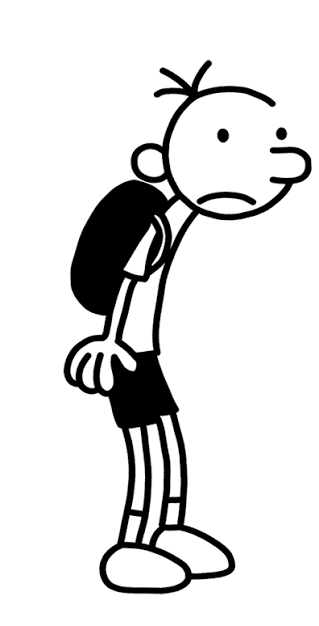

Personagens

Greg Heffley: é o personagem principal.
Rowley Jefferson: é o melhor amigo de Greg.
Rodrick Heffley: é o irmão mais velho de Greg.
Manny Heffley: é o irmão mais novo de Greg.
Diário de um Banana é um livro escrito por Jeff Kinney. A história acompanha Greg Heffley, um garoto que enfrenta situações engraçadas e problemas na escola e em sua família.
Greg escreve sobre sua vida em seu diário e conta tudo o que acontece de uma maneira divertida.

Greg Heffley: é o personagem principal.
Rowley Jefferson: é o melhor amigo de Greg.
Rodrick Heffley: é o irmão mais velho de Greg.
Manny Heffley: é o irmão mais novo de Greg.